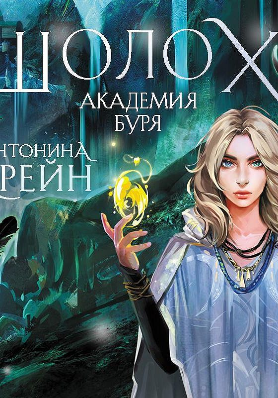
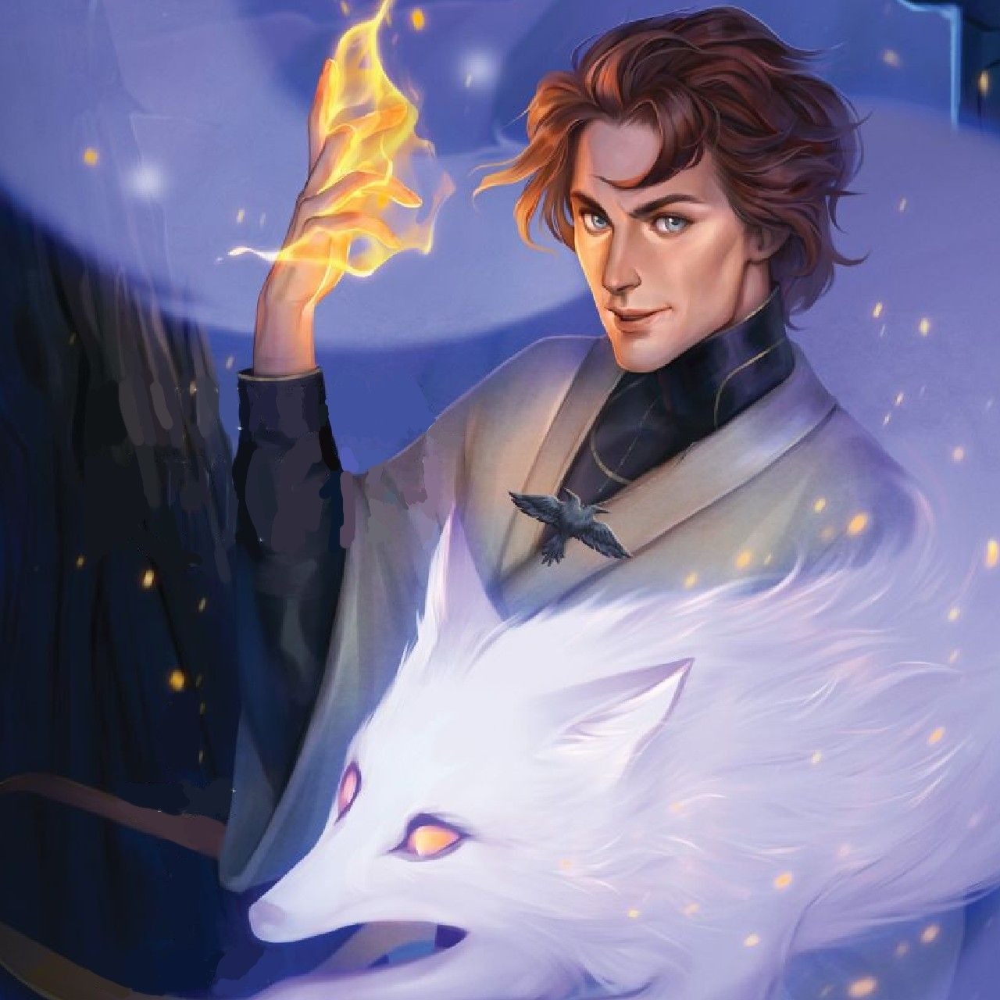

Я слышу голос, что зовет неведомо куда,
Прозрачной поступью уводит сквозь листву,
И расступается трава, поет вода,
И шепот сердца оттеняет тишину.
Я слышу голос. Вновь.
И начинаю путь…
Старинная дэльская песня
| ШОЛОХ. Теневые блики | ШОЛОХ. Призрачные рощи | |
| Тинави живет в столице колдовства, но напрочь лишилась магии. Теперь на ее будущем можно поставить крест. Но в полнолуние она спасает странного мальчишку с амнезией, а следующим утром внезапно получает работу Ловчей - детектива по делам чужестранцев. В паре с магом Полынью Тинави предстоит отыскать убийцу, орудующего в самом сердце королевства - во дворце. Постепенно девушка убеждается, что на магии свет клином не сошелся. |
Странные дела творятся в Шолохе, столице Лесного королевства. Дерзкий преступник ведет обратный отсчет, совершая скандальные нападения и оставляя зашифрованные письма. Дети исчезают из Тернового замка - сумрачного приюта, затерянного среди болот. Полынь - лучший детектив Иноземного ведомства - что-то скрывает, а в лесу по ночам танцует призрачный культ... |
|
| ШОЛОХ. Акадения Буря | ШОЛОХ. Орден сумрачной вуали | |
| Ладиславу Найт ждут непростые полгода. Пытаясь убежать от себя, она отправляется на далекий остров Этерны. Берти Голден-Халла - детектив - тоже скрывается от прошлого. И вместе с ним Лади готова нырнуть в опасное расследование. Древние тайны, магическая Академия и остров, полный загадок. Буря разразится через три, два... |
Джеремия не похожа на других воров города Пик Грез. Она разбирается в древней поэзии, говорит на семи мертвых языках и цепенеет при звуках грозы. Тилвас не похож на других аристократов города Пик Волн. Он продал свой замок, его тень ведет себя странно, а на груди висит загадочный амулет. Этот амулет должна украсть Джеремия. Простое задание. Слишком простое, чтобы все действительно было так легко. |